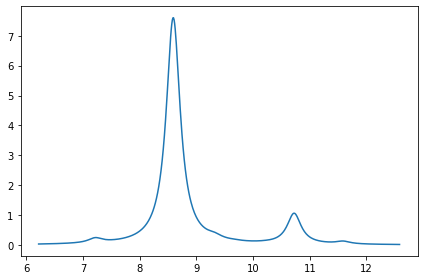
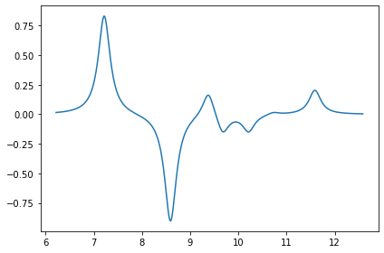

Implementation of the exciton coupling model
Contents
Implementation of the exciton coupling model¶
Example¶
Import modules¶
import veloxchem as vlx
import numpy as np
Warning: importing 'simtk.openmm' is deprecated. Import 'openmm' instead.
* Warning * Environment variable OMP_NUM_THREADS not set.
* Warning * Setting OMP_NUM_THREADS to 4.
Set up molecule and basis set¶
# molecule and basis
mol_xyz = """12
c2h4-dimer
C -1.37731 1.01769 -0.71611
C -0.04211 1.07142 -0.72602
H -1.96225 1.74636 -0.16458
H -1.90859 0.23094 -1.24174
H 0.49049 1.84498 -0.18262
H 0.54315 0.32947 -1.25941
C -1.18880 -1.26220 2.03150
C 0.05470 -0.84410 2.28420
H -1.37000 -2.18130 1.48410
H 0.91550 -1.41310 1.94850
H -2.04870 -0.68100 2.34880
H 0.23460 0.08670 2.81250
"""
molecule = vlx.Molecule.from_xyz_string(mol_xyz)
basis = vlx.MolecularBasis.read(molecule, 'def2-svp')
Set up the exciton model driver¶
# exciton model setup
exmod_settings = {
'fragments': '2',
'atoms_per_fragment': '6',
'charges': '0',
'nstates': '5',
'ct_nocc': '1',
'ct_nvir': '1',
}
method_settings = {'dft': 'no'}
exmod_drv = vlx.ExcitonModelDriver()
exmod_drv.update_settings(exmod_settings, method_settings)
Initializes exciton model Hamiltonian and transition dipoles¶
monomer_natoms = list(exmod_drv.natoms)
n_monomers = len(monomer_natoms)
monomer_start_indices = [sum(exmod_drv.natoms[:i]) for i in range(n_monomers)]
npairs = n_monomers * (n_monomers - 1) // 2
total_LE_states = n_monomers * exmod_drv.nstates
total_CT_states = npairs * exmod_drv.ct_nocc * exmod_drv.ct_nvir * 2
total_num_states = total_LE_states + total_CT_states
exmod_drv.H = np.zeros((total_num_states, total_num_states))
exmod_drv.elec_trans_dipoles = np.zeros((total_num_states, 3))
exmod_drv.velo_trans_dipoles = np.zeros((total_num_states, 3))
exmod_drv.magn_trans_dipoles = np.zeros((total_num_states, 3))
exmod_drv.center_of_mass = molecule.center_of_mass()
excitation_ids = exmod_drv.get_excitation_ids()
Run monomer calculations¶
# monomer calculations
monomers_info = [{} for ind in range(n_monomers)]
for ind in range(n_monomers):
monomer = molecule.get_sub_molecule(monomer_start_indices[ind],
monomer_natoms[ind])
monomer.set_charge(exmod_drv.charges[ind])
monomer.check_multiplicity()
scf_tensors = exmod_drv.monomer_scf(method_settings, ind, monomer, basis)
tda_results = exmod_drv.monomer_tda(method_settings, ind, monomer, basis,
scf_tensors)
monomers_info[ind]['mo'] = scf_tensors['C_alpha']
monomers_info[ind]['exc_energies'] = tda_results['exc_energies']
monomers_info[ind]['exc_vectors'] = tda_results['exc_vectors']
one_elec_ints = exmod_drv.get_one_elec_integrals(monomer, basis)
trans_dipoles = exmod_drv.get_LE_trans_dipoles(monomer, basis,
one_elec_ints, scf_tensors,
tda_results)
# LE states
for s in range(exmod_drv.nstates):
h = excitation_ids[ind, ind] + s
# LE energies
exmod_drv.H[h, h] = monomers_info[ind]['exc_energies'][s]
# LE transition dipoles
exmod_drv.elec_trans_dipoles[h, :] = trans_dipoles['electric'][s]
exmod_drv.velo_trans_dipoles[h, :] = trans_dipoles['velocity'][s]
exmod_drv.magn_trans_dipoles[h, :] = trans_dipoles['magnetic'][s]
Molecular Geometry (Angstroms)
================================
Atom Coordinate X Coordinate Y Coordinate Z
C -1.377310000000 1.017690000000 -0.716110000000
C -0.042110000000 1.071420000000 -0.726020000000
H -1.962250000000 1.746360000000 -0.164580000000
H -1.908590000000 0.230940000000 -1.241740000000
H 0.490490000000 1.844980000000 -0.182620000000
H 0.543150000000 0.329470000000 -1.259410000000
Molecular charge : 0
Spin multiplicity : 1
Number of atoms : 6
Number of alpha electrons : 8
Number of beta electrons : 8
Molecular Basis (Atomic Basis)
================================
Basis: DEF2-SVP
Atom Contracted GTOs Primitive GTOs
H (2S,1P) (4S,1P)
C (3S,2P,1D) (7S,4P,1D)
Contracted Basis Functions : 48
Primitive Basis Functions : 76
Self Consistent Field Driver Setup
====================================
Wave Function Model : Spin-Restricted Hartree-Fock
Initial Guess Model : Restart from Checkpoint
Convergence Accelerator : Direct Inversion of Iterative Subspace
Max. Number of Iterations : 150
Max. Number of Error Vectors : 10
Convergence Threshold : 1.0e-06
ERI Screening Scheme : Cauchy Schwarz + Density
ERI Screening Mode : Dynamic
ERI Screening Threshold : 1.0e-12
Linear Dependence Threshold : 1.0e-06
* Info * Nuclear repulsion energy: 33.3198299171 a.u.
* Info * Overlap matrix computed in 0.00 sec.
* Info * Kinetic energy matrix computed in 0.00 sec.
* Info * Nuclear potential matrix computed in 0.00 sec.
* Info * Orthogonalization matrix computed in 0.00 sec.
* Info * Restarting from checkpoint file: monomer_1.scf.h5
Iter. | Hartree-Fock Energy | Energy Change | Gradient Norm | Max. Gradient | Density Change
--------------------------------------------------------------------------------------------
1 -77.977546605109 0.0000000000 0.00000091 0.00000011 0.00000000
* Info * Checkpoint written to file: monomer_1.scf.h5
* Info * SCF tensors written to file: monomer_1.scf.tensors.h5
*** SCF converged in 1 iterations. Time: 0.40 sec.
Spin-Restricted Hartree-Fock:
-----------------------------
Total Energy : -77.9775466051 a.u.
Electronic Energy : -111.2973765222 a.u.
Nuclear Repulsion Energy : 33.3198299171 a.u.
------------------------------------
Gradient Norm : 0.0000009100 a.u.
Ground State Information
------------------------
Charge of Molecule : 0.0
Multiplicity (2S+1) : 1.0
Magnetic Quantum Number (M_S) : 0.0
Spin Restricted Orbitals
------------------------
Molecular Orbital No. 4:
--------------------------
Occupation: 2.000 Energy: -0.78142 a.u.
( 1 C 1s : -0.15) ( 1 C 2s : 0.30) ( 1 C 1p+1: -0.16)
( 2 C 1s : 0.15) ( 2 C 2s : -0.30) ( 2 C 1p+1: -0.16)
( 3 H 1s : 0.20) ( 4 H 1s : 0.19) ( 5 H 1s : -0.20)
( 6 H 1s : -0.19)
Molecular Orbital No. 5:
--------------------------
Occupation: 2.000 Energy: -0.64291 a.u.
( 1 C 1p-1: -0.26) ( 1 C 1p0 : -0.18) ( 2 C 1p-1: -0.26)
( 2 C 1p0 : -0.18) ( 3 H 1s : -0.21) ( 4 H 1s : 0.21)
( 5 H 1s : -0.21) ( 6 H 1s : 0.21)
Molecular Orbital No. 6:
--------------------------
Occupation: 2.000 Energy: -0.58489 a.u.
( 1 C 1p+1: 0.41) ( 2 C 1p+1: -0.41) ( 3 H 1s : -0.17)
( 4 H 1s : -0.17) ( 5 H 1s : -0.17) ( 6 H 1s : -0.17)
Molecular Orbital No. 7:
--------------------------
Occupation: 2.000 Energy: -0.50726 a.u.
( 1 C 1p-1: -0.24) ( 1 C 1p0 : -0.17) ( 2 C 1p-1: 0.24)
( 2 C 1p0 : 0.17) ( 3 H 1s : -0.26) ( 4 H 1s : 0.26)
( 5 H 1s : 0.26) ( 6 H 1s : -0.26)
Molecular Orbital No. 8:
--------------------------
Occupation: 2.000 Energy: -0.37604 a.u.
( 1 C 1p-1: -0.22) ( 1 C 1p0 : 0.31) ( 1 C 2p-1: -0.17)
( 1 C 2p0 : 0.24) ( 2 C 1p-1: -0.22) ( 2 C 1p0 : 0.31)
( 2 C 2p-1: -0.17) ( 2 C 2p0 : 0.24)
Molecular Orbital No. 9:
--------------------------
Occupation: 0.000 Energy: 0.16440 a.u.
( 1 C 1p-1: -0.20) ( 1 C 1p0 : 0.28) ( 1 C 2p-1: -0.44)
( 1 C 2p0 : 0.62) ( 2 C 1p-1: 0.20) ( 2 C 1p0 : -0.28)
( 2 C 2p-1: 0.44) ( 2 C 2p0 : -0.62)
Molecular Orbital No. 10:
--------------------------
Occupation: 0.000 Energy: 0.20503 a.u.
( 1 C 3s : 1.59) ( 1 C 2p+1: -0.56) ( 2 C 3s : 1.59)
( 2 C 2p+1: 0.56) ( 3 H 2s : -1.12) ( 4 H 2s : -1.12)
( 5 H 2s : -1.12) ( 6 H 2s : -1.12)
Molecular Orbital No. 11:
--------------------------
Occupation: 0.000 Energy: 0.23177 a.u.
( 1 C 1p-1: 0.18) ( 1 C 2p-1: 0.63) ( 1 C 2p0 : 0.44)
( 2 C 1p-1: 0.18) ( 2 C 2p-1: 0.63) ( 2 C 2p0 : 0.44)
( 3 H 2s : -1.17) ( 4 H 2s : 1.16) ( 5 H 2s : -1.17)
( 6 H 2s : 1.17)
Molecular Orbital No. 12:
--------------------------
Occupation: 0.000 Energy: 0.24119 a.u.
( 1 C 3s : 2.29) ( 1 C 2p+1: -0.19) ( 2 C 3s : -2.29)
( 2 C 2p+1: -0.19) ( 3 H 2s : -1.27) ( 4 H 2s : -1.27)
( 5 H 2s : 1.27) ( 6 H 2s : 1.27)
Molecular Orbital No. 13:
--------------------------
Occupation: 0.000 Energy: 0.30329 a.u.
( 1 C 1p-1: 0.16) ( 1 C 2p-1: 1.31) ( 1 C 2p0 : 0.93)
( 2 C 1p-1: -0.16) ( 2 C 2p-1: -1.31) ( 2 C 2p0 : -0.93)
( 3 H 2s : -1.66) ( 4 H 2s : 1.66) ( 5 H 2s : 1.66)
( 6 H 2s : -1.66)
TDA Driver Setup
==================
Number of States : 5
Max. Number of Iterations : 100
Convergence Threshold : 1.0e-04
ERI Screening Scheme : Cauchy Schwarz + Density
ERI Screening Threshold : 1.0e-12
* Info * Restarting from checkpoint file: monomer_1.rsp.h5
*** Iteration: 1 * Reduced Space: 5 * Residues (Max,Min): 2.13e-01 and 6.34e-02
State 1: 0.34776432 a.u. Residual Norm: 0.06411031
State 2: 0.35563977 a.u. Residual Norm: 0.08504656
State 3: 0.35615247 a.u. Residual Norm: 0.21331548
State 4: 0.36532189 a.u. Residual Norm: 0.07855063
State 5: 0.39640597 a.u. Residual Norm: 0.06336656
*** Iteration: 2 * Reduced Space: 10 * Residues (Max,Min): 3.72e-02 and 9.22e-03
State 1: 0.31097350 a.u. Residual Norm: 0.03718790
State 2: 0.34145869 a.u. Residual Norm: 0.01285025
State 3: 0.34478340 a.u. Residual Norm: 0.01055905
State 4: 0.35566831 a.u. Residual Norm: 0.00921706
State 5: 0.39016820 a.u. Residual Norm: 0.01267175
*** Iteration: 3 * Reduced Space: 15 * Residues (Max,Min): 6.02e-02 and 1.94e-03
State 1: 0.30903317 a.u. Residual Norm: 0.00798914
State 2: 0.34134501 a.u. Residual Norm: 0.00248600
State 3: 0.34465110 a.u. Residual Norm: 0.00201592
State 4: 0.35557423 a.u. Residual Norm: 0.00194324
State 5: 0.38822946 a.u. Residual Norm: 0.06022102
*** Iteration: 4 * Reduced Space: 20 * Residues (Max,Min): 3.30e-02 and 1.24e-04
State 1: 0.30897493 a.u. Residual Norm: 0.00322653
State 2: 0.34133733 a.u. Residual Norm: 0.00047385
State 3: 0.34464900 a.u. Residual Norm: 0.00012369
State 4: 0.35557238 a.u. Residual Norm: 0.00013703
State 5: 0.37684228 a.u. Residual Norm: 0.03299540
*** Iteration: 5 * Reduced Space: 25 * Residues (Max,Min): 1.29e-02 and 5.35e-05
State 1: 0.30897029 a.u. Residual Norm: 0.00084213
State 2: 0.34133726 a.u. Residual Norm: 0.00011005
State 3: 0.34464896 a.u. Residual Norm: 0.00007201
State 4: 0.35557236 a.u. Residual Norm: 0.00005346
State 5: 0.37565302 a.u. Residual Norm: 0.01293763
*** Iteration: 6 * Reduced Space: 30 * Residues (Max,Min): 5.13e-03 and 7.94e-06
State 1: 0.30897008 a.u. Residual Norm: 0.00010760
State 2: 0.34133726 a.u. Residual Norm: 0.00002105
State 3: 0.34464896 a.u. Residual Norm: 0.00001287
State 4: 0.35557235 a.u. Residual Norm: 0.00000794
State 5: 0.37556970 a.u. Residual Norm: 0.00512962
*** Iteration: 7 * Reduced Space: 35 * Residues (Max,Min): 6.12e-04 and 8.41e-07
State 1: 0.30897008 a.u. Residual Norm: 0.00001205
State 2: 0.34133725 a.u. Residual Norm: 0.00000319
State 3: 0.34464896 a.u. Residual Norm: 0.00000114
State 4: 0.35557235 a.u. Residual Norm: 0.00000084
State 5: 0.37556218 a.u. Residual Norm: 0.00061208
*** Iteration: 8 * Reduced Space: 40 * Residues (Max,Min): 1.05e-04 and 3.30e-07
State 1: 0.30897008 a.u. Residual Norm: 0.00000130
State 2: 0.34133725 a.u. Residual Norm: 0.00000073
State 3: 0.34464896 a.u. Residual Norm: 0.00000033
State 4: 0.35557235 a.u. Residual Norm: 0.00000050
State 5: 0.37556201 a.u. Residual Norm: 0.00010481
*** Iteration: 9 * Reduced Space: 45 * Residues (Max,Min): 1.65e-05 and 1.20e-07
State 1: 0.30897008 a.u. Residual Norm: 0.00000027
State 2: 0.34133725 a.u. Residual Norm: 0.00000012
State 3: 0.34464896 a.u. Residual Norm: 0.00000012
State 4: 0.35557235 a.u. Residual Norm: 0.00000017
State 5: 0.37556201 a.u. Residual Norm: 0.00001655
*** 5 excited states converged in 9 iterations. Time: 0.34 sec
* Info * Response solution vectors written to file: monomer_1.rsp.solutions.h5
Electric Transition Dipole Moments (dipole length, a.u.)
--------------------------------------------------------
X Y Z
Excited State S1: 1.751428 0.070624 -0.013099
Excited State S2: -0.004893 0.101652 -0.143186
Excited State S3: -0.000404 0.005778 0.005701
Excited State S4: -0.001038 0.004353 0.002742
Excited State S5: -0.013278 -0.000576 0.000132
Electric Transition Dipole Moments (dipole velocity, a.u.)
----------------------------------------------------------
X Y Z
Excited State S1: 0.874293 0.035219 -0.006413
Excited State S2: -0.008190 0.164623 -0.231994
Excited State S3: -0.000168 0.003183 0.004934
Excited State S4: -0.000697 0.003958 0.002264
Excited State S5: -0.007697 -0.000362 0.000050
Magnetic Transition Dipole Moments (a.u.)
-----------------------------------------
X Y Z
Excited State S1: -0.005420 0.177719 0.268587
Excited State S2: 0.035857 0.050997 0.035103
Excited State S3: -0.588993 -0.024477 0.005151
Excited State S4: -0.405248 -0.016471 0.003944
Excited State S5: 0.022746 -0.663428 -0.472983
One-Photon Absorption
---------------------
Excited State S1: 0.30897008 a.u. 8.40750 eV Osc.Str. 0.6329
Excited State S2: 0.34133725 a.u. 9.28826 eV Osc.Str. 0.0070
Excited State S3: 0.34464896 a.u. 9.37838 eV Osc.Str. 0.0000
Excited State S4: 0.35557235 a.u. 9.67562 eV Osc.Str. 0.0000
Excited State S5: 0.37556201 a.u. 10.21956 eV Osc.Str. 0.0000
Electronic Circular Dichroism
-----------------------------
Excited State S1: Rot.Str. 0.000202 a.u. 0.0953 [10**(-40) cgs]
Excited State S2: Rot.Str. 0.000042 a.u. 0.0198 [10**(-40) cgs]
Excited State S3: Rot.Str. -0.000047 a.u. -0.0220 [10**(-40) cgs]
Excited State S4: Rot.Str. -0.000226 a.u. -0.1066 [10**(-40) cgs]
Excited State S5: Rot.Str. -0.000041 a.u. -0.0194 [10**(-40) cgs]
Molecular Geometry (Angstroms)
================================
Atom Coordinate X Coordinate Y Coordinate Z
C -1.188800000000 -1.262200000000 2.031500000000
C 0.054700000000 -0.844100000000 2.284200000000
H -1.370000000000 -2.181300000000 1.484100000000
H 0.915500000000 -1.413100000000 1.948500000000
H -2.048700000000 -0.681000000000 2.348800000000
H 0.234600000000 0.086700000000 2.812500000000
Molecular charge : 0
Spin multiplicity : 1
Number of atoms : 6
Number of alpha electrons : 8
Number of beta electrons : 8
Molecular Basis (Atomic Basis)
================================
Basis: DEF2-SVP
Atom Contracted GTOs Primitive GTOs
H (2S,1P) (4S,1P)
C (3S,2P,1D) (7S,4P,1D)
Contracted Basis Functions : 48
Primitive Basis Functions : 76
Self Consistent Field Driver Setup
====================================
Wave Function Model : Spin-Restricted Hartree-Fock
Initial Guess Model : Restart from Checkpoint
Convergence Accelerator : Direct Inversion of Iterative Subspace
Max. Number of Iterations : 150
Max. Number of Error Vectors : 10
Convergence Threshold : 1.0e-06
ERI Screening Scheme : Cauchy Schwarz + Density
ERI Screening Mode : Dynamic
ERI Screening Threshold : 1.0e-12
Linear Dependence Threshold : 1.0e-06
* Info * Nuclear repulsion energy: 33.3224196412 a.u.
* Info * Overlap matrix computed in 0.00 sec.
* Info * Kinetic energy matrix computed in 0.00 sec.
* Info * Nuclear potential matrix computed in 0.01 sec.
* Info * Orthogonalization matrix computed in 0.00 sec.
* Info * Restarting from checkpoint file: monomer_2.scf.h5
Iter. | Hartree-Fock Energy | Energy Change | Gradient Norm | Max. Gradient | Density Change
--------------------------------------------------------------------------------------------
1 -77.977558810872 0.0000000000 0.00000094 0.00000011 0.00000000
* Info * Checkpoint written to file: monomer_2.scf.h5
* Info * SCF tensors written to file: monomer_2.scf.tensors.h5
*** SCF converged in 1 iterations. Time: 0.47 sec.
Spin-Restricted Hartree-Fock:
-----------------------------
Total Energy : -77.9775588109 a.u.
Electronic Energy : -111.2999784521 a.u.
Nuclear Repulsion Energy : 33.3224196412 a.u.
------------------------------------
Gradient Norm : 0.0000009393 a.u.
Ground State Information
------------------------
Charge of Molecule : 0.0
Multiplicity (2S+1) : 1.0
Magnetic Quantum Number (M_S) : 0.0
Spin Restricted Orbitals
------------------------
Molecular Orbital No. 4:
--------------------------
Occupation: 2.000 Energy: -0.78137 a.u.
( 1 C 1s : 0.15) ( 1 C 2s : -0.30) ( 2 C 1s : -0.15)
( 2 C 2s : 0.30) ( 3 H 1s : -0.20) ( 4 H 1s : 0.20)
( 5 H 1s : -0.19) ( 6 H 1s : 0.19)
Molecular Orbital No. 5:
--------------------------
Occupation: 2.000 Energy: -0.64290 a.u.
( 1 C 1p-1: -0.25) ( 2 C 1p-1: -0.25) ( 3 H 1s : 0.21)
( 4 H 1s : 0.21) ( 5 H 1s : -0.21) ( 6 H 1s : -0.21)
Molecular Orbital No. 6:
--------------------------
Occupation: 2.000 Energy: -0.58495 a.u.
( 1 C 1p+1: 0.38) ( 2 C 1p+1: -0.38) ( 3 H 1s : -0.17)
( 4 H 1s : -0.17) ( 5 H 1s : -0.17) ( 6 H 1s : -0.17)
Molecular Orbital No. 7:
--------------------------
Occupation: 2.000 Energy: -0.50717 a.u.
( 1 C 1p-1: 0.24) ( 2 C 1p-1: -0.24) ( 3 H 1s : -0.26)
( 4 H 1s : 0.26) ( 5 H 1s : 0.26) ( 6 H 1s : -0.26)
Molecular Orbital No. 8:
--------------------------
Occupation: 2.000 Energy: -0.37611 a.u.
( 1 C 1p-1: -0.19) ( 1 C 1p0 : 0.33) ( 1 C 2p0 : 0.26)
( 2 C 1p-1: -0.19) ( 2 C 1p0 : 0.33) ( 2 C 2p0 : 0.26)
Molecular Orbital No. 9:
--------------------------
Occupation: 0.000 Energy: 0.16446 a.u.
( 1 C 1p-1: -0.17) ( 1 C 1p0 : 0.30) ( 1 C 2p-1: -0.38)
( 1 C 2p0 : 0.65) ( 2 C 1p-1: 0.17) ( 2 C 1p0 : -0.30)
( 2 C 2p-1: 0.38) ( 2 C 2p0 : -0.66)
Molecular Orbital No. 10:
--------------------------
Occupation: 0.000 Energy: 0.20503 a.u.
( 1 C 3s : -1.59) ( 1 C 2p+1: 0.52) ( 1 C 2p-1: 0.17)
( 2 C 3s : -1.59) ( 2 C 2p+1: -0.52) ( 2 C 2p-1: -0.18)
( 3 H 2s : 1.11) ( 4 H 2s : 1.11) ( 5 H 2s : 1.12)
( 6 H 2s : 1.12)
Molecular Orbital No. 11:
--------------------------
Occupation: 0.000 Energy: 0.23175 a.u.
( 1 C 1p-1: -0.18) ( 1 C 2p+1: 0.28) ( 1 C 2p-1: -0.62)
( 1 C 2p0 : -0.36) ( 2 C 1p-1: -0.18) ( 2 C 2p+1: 0.28)
( 2 C 2p-1: -0.62) ( 2 C 2p0 : -0.36) ( 3 H 2s : -1.17)
( 4 H 2s : -1.17) ( 5 H 2s : 1.16) ( 6 H 2s : 1.16)
Molecular Orbital No. 12:
--------------------------
Occupation: 0.000 Energy: 0.24118 a.u.
( 1 C 3s : -2.29) ( 1 C 2p+1: 0.18) ( 2 C 3s : 2.29)
( 2 C 2p+1: 0.18) ( 3 H 2s : 1.27) ( 4 H 2s : -1.27)
( 5 H 2s : 1.27) ( 6 H 2s : -1.27)
Molecular Orbital No. 13:
--------------------------
Occupation: 0.000 Energy: 0.30331 a.u.
( 1 C 1p-1: 0.16) ( 1 C 2p+1: -0.59) ( 1 C 2p-1: 1.30)
( 1 C 2p0 : 0.75) ( 2 C 1p-1: -0.16) ( 2 C 2p+1: 0.59)
( 2 C 2p-1: -1.30) ( 2 C 2p0 : -0.75) ( 3 H 2s : 1.66)
( 4 H 2s : -1.66) ( 5 H 2s : -1.66) ( 6 H 2s : 1.66)
TDA Driver Setup
==================
Number of States : 5
Max. Number of Iterations : 100
Convergence Threshold : 1.0e-04
ERI Screening Scheme : Cauchy Schwarz + Density
ERI Screening Threshold : 1.0e-12
* Info * Restarting from checkpoint file: monomer_2.rsp.h5
*** Iteration: 1 * Reduced Space: 5 * Residues (Max,Min): 2.13e-01 and 6.34e-02
State 1: 0.34783116 a.u. Residual Norm: 0.06412244
State 2: 0.35563877 a.u. Residual Norm: 0.08503436
State 3: 0.35624616 a.u. Residual Norm: 0.21329400
State 4: 0.36533374 a.u. Residual Norm: 0.07855921
State 5: 0.39646091 a.u. Residual Norm: 0.06337301
*** Iteration: 2 * Reduced Space: 10 * Residues (Max,Min): 3.72e-02 and 9.21e-03
State 1: 0.31108179 a.u. Residual Norm: 0.03718485
State 2: 0.34152241 a.u. Residual Norm: 0.01285172
State 3: 0.34478504 a.u. Residual Norm: 0.01056213
State 4: 0.35567255 a.u. Residual Norm: 0.00921130
State 5: 0.39022130 a.u. Residual Norm: 0.01267120
*** Iteration: 3 * Reduced Space: 15 * Residues (Max,Min): 6.01e-02 and 1.94e-03
State 1: 0.30914159 a.u. Residual Norm: 0.00799112
State 2: 0.34140869 a.u. Residual Norm: 0.00248645
State 3: 0.34465274 a.u. Residual Norm: 0.00201444
State 4: 0.35557853 a.u. Residual Norm: 0.00194458
State 5: 0.38828574 a.u. Residual Norm: 0.06012338
*** Iteration: 4 * Reduced Space: 20 * Residues (Max,Min): 3.29e-02 and 1.24e-04
State 1: 0.30908321 a.u. Residual Norm: 0.00323357
State 2: 0.34140101 a.u. Residual Norm: 0.00047406
State 3: 0.34465065 a.u. Residual Norm: 0.00012395
State 4: 0.35557668 a.u. Residual Norm: 0.00013733
State 5: 0.37695764 a.u. Residual Norm: 0.03290224
*** Iteration: 5 * Reduced Space: 25 * Residues (Max,Min): 1.29e-02 and 5.35e-05
State 1: 0.30907855 a.u. Residual Norm: 0.00084350
State 2: 0.34140093 a.u. Residual Norm: 0.00011023
State 3: 0.34465061 a.u. Residual Norm: 0.00007207
State 4: 0.35557665 a.u. Residual Norm: 0.00005353
State 5: 0.37577701 a.u. Residual Norm: 0.01289342
*** Iteration: 6 * Reduced Space: 30 * Residues (Max,Min): 5.11e-03 and 8.02e-06
State 1: 0.30907834 a.u. Residual Norm: 0.00010769
State 2: 0.34140093 a.u. Residual Norm: 0.00002109
State 3: 0.34465060 a.u. Residual Norm: 0.00001291
State 4: 0.35557665 a.u. Residual Norm: 0.00000802
State 5: 0.37569441 a.u. Residual Norm: 0.00510829
*** Iteration: 7 * Reduced Space: 35 * Residues (Max,Min): 6.12e-04 and 6.03e-07
State 1: 0.30907834 a.u. Residual Norm: 0.00001208
State 2: 0.34140093 a.u. Residual Norm: 0.00000320
State 3: 0.34465060 a.u. Residual Norm: 0.00000104
State 4: 0.35557665 a.u. Residual Norm: 0.00000060
State 5: 0.37568693 a.u. Residual Norm: 0.00061164
*** Iteration: 8 * Reduced Space: 40 * Residues (Max,Min): 1.06e-04 and 1.56e-07
State 1: 0.30907834 a.u. Residual Norm: 0.00000134
State 2: 0.34140093 a.u. Residual Norm: 0.00000074
State 3: 0.34465060 a.u. Residual Norm: 0.00000016
State 4: 0.35557665 a.u. Residual Norm: 0.00000022
State 5: 0.37568677 a.u. Residual Norm: 0.00010635
*** Iteration: 9 * Reduced Space: 45 * Residues (Max,Min): 2.38e-05 and 5.62e-08
State 1: 0.30907834 a.u. Residual Norm: 0.00000038
State 2: 0.34140093 a.u. Residual Norm: 0.00000020
State 3: 0.34465060 a.u. Residual Norm: 0.00000006
State 4: 0.35557665 a.u. Residual Norm: 0.00000010
State 5: 0.37568676 a.u. Residual Norm: 0.00002378
*** 5 excited states converged in 9 iterations. Time: 0.28 sec
* Info * Response solution vectors written to file: monomer_2.rsp.solutions.h5
Electric Transition Dipole Moments (dipole length, a.u.)
--------------------------------------------------------
X Y Z
Excited State S1: 1.631494 0.548438 0.331528
Excited State S2: 0.001132 0.088161 -0.151817
Excited State S3: -0.002738 0.004884 0.006561
Excited State S4: -0.001021 0.004831 0.001875
Excited State S5: -0.012241 -0.004106 -0.002480
Electric Transition Dipole Moments (dipole velocity, a.u.)
----------------------------------------------------------
X Y Z
Excited State S1: 0.814914 0.273886 0.165526
Excited State S2: 0.001951 0.142769 -0.246050
Excited State S3: -0.001953 0.001675 0.007254
Excited State S4: -0.001115 0.004417 0.001220
Excited State S5: -0.007104 -0.002345 -0.001426
Magnetic Transition Dipole Moments (a.u.)
-----------------------------------------
X Y Z
Excited State S1: 0.219896 -0.533441 -0.201213
Excited State S2: 0.025192 0.046711 0.027482
Excited State S3: 0.550199 0.184276 0.112296
Excited State S4: 0.378658 0.127351 0.077821
Excited State S5: -0.299475 0.659631 0.378974
One-Photon Absorption
---------------------
Excited State S1: 0.30907834 a.u. 8.41045 eV Osc.Str. 0.6331
Excited State S2: 0.34140093 a.u. 9.28999 eV Osc.Str. 0.0070
Excited State S3: 0.34465060 a.u. 9.37842 eV Osc.Str. 0.0000
Excited State S4: 0.35557665 a.u. 9.67573 eV Osc.Str. 0.0000
Excited State S5: 0.37568676 a.u. 10.22296 eV Osc.Str. 0.0000
Electronic Circular Dichroism
-----------------------------
Excited State S1: Rot.Str. 0.000212 a.u. 0.0999 [10**(-40) cgs]
Excited State S2: Rot.Str. 0.000044 a.u. 0.0207 [10**(-40) cgs]
Excited State S3: Rot.Str. -0.000049 a.u. -0.0231 [10**(-40) cgs]
Excited State S4: Rot.Str. -0.000235 a.u. -0.1108 [10**(-40) cgs]
Excited State S5: Rot.Str. -0.000040 a.u. -0.0188 [10**(-40) cgs]
Run dimer calculations¶
# dimer calculations
for ind_A in range(n_monomers):
monomer_A = molecule.get_sub_molecule(monomer_start_indices[ind_A],
monomer_natoms[ind_A])
monomer_A.set_charge(exmod_drv.charges[ind_A])
monomer_A.check_multiplicity()
for ind_B in range(ind_A + 1, n_monomers):
monomer_B = molecule.get_sub_molecule(monomer_start_indices[ind_B],
monomer_natoms[ind_B])
monomer_B.set_charge(exmod_drv.charges[ind_B])
monomer_B.check_multiplicity()
dimer = vlx.Molecule(monomer_A, monomer_B)
dimer.check_multiplicity()
mo_A = monomers_info[ind_A]['mo']
mo_B = monomers_info[ind_B]['mo']
nocc_A = monomer_A.number_of_alpha_electrons()
nocc_B = monomer_B.number_of_alpha_electrons()
nvir_A = mo_A.shape[1] - nocc_A
nvir_B = mo_B.shape[1] - nocc_B
nocc = nocc_A + nocc_B
nvir = nvir_A + nvir_B
mo = exmod_drv.dimer_mo_coefficients(monomer_A, monomer_B, basis, mo_A,
mo_B)
dimer_prop = exmod_drv.dimer_properties(dimer, basis, mo)
dimer_energy = dimer_prop['energy']
exc_vectors_A = monomers_info[ind_A]['exc_vectors']
exc_vectors_B = monomers_info[ind_B]['exc_vectors']
exc_vectors = []
exc_vectors += exmod_drv.dimer_excitation_vectors_LE_A(
exc_vectors_A, ind_A, nocc_A, nvir_A, nocc, nvir, excitation_ids)
exc_vectors += exmod_drv.dimer_excitation_vectors_LE_B(
exc_vectors_B, ind_B, nocc_A, nvir_A, nocc, nvir, excitation_ids)
exc_vectors += exmod_drv.dimer_excitation_vectors_CT_AB(
ind_A, ind_B, nocc_A, nvir_A, nocc, nvir, excitation_ids)
exc_vectors += exmod_drv.dimer_excitation_vectors_CT_BA(
ind_A, ind_B, nocc_A, nvir_A, nocc, nvir, excitation_ids)
sigma_vectors = exmod_drv.dimer_sigma_vectors(dimer, basis, dimer_prop,
mo, exc_vectors)
one_elec_ints = exmod_drv.get_one_elec_integrals(dimer, basis)
trans_dipoles = exmod_drv.get_CT_trans_dipoles(
dimer, basis, one_elec_ints, mo,
exc_vectors[exmod_drv.nstates * 2:])
# CT states
for i_vec, (c_vec, s_vec) in enumerate(
zip(exc_vectors[exmod_drv.nstates * 2:],
sigma_vectors[exmod_drv.nstates * 2:])):
# CT energies
energy = np.vdot(c_vec['vec'], s_vec['vec'])
exmod_drv.H[c_vec['index'], c_vec['index']] = energy
# CT transition dipoles
exmod_drv.elec_trans_dipoles[
c_vec['index'], :] = trans_dipoles['electric'][i_vec]
exmod_drv.velo_trans_dipoles[
c_vec['index'], :] = trans_dipoles['velocity'][i_vec]
exmod_drv.magn_trans_dipoles[
c_vec['index'], :] = trans_dipoles['magnetic'][i_vec]
# LE(A)-LE(B) couplings
for c_vec in exc_vectors[:exmod_drv.nstates]:
for s_vec in sigma_vectors[exmod_drv.nstates:exmod_drv.nstates * 2]:
coupling = np.vdot(c_vec['vec'], s_vec['vec'])
exmod_drv.H[c_vec['index'], s_vec['index']] = coupling
exmod_drv.H[s_vec['index'], c_vec['index']] = coupling
# LE-CT couplings
for c_vec in exc_vectors[:exmod_drv.nstates * 2]:
for s_vec in sigma_vectors[exmod_drv.nstates * 2:]:
coupling = np.vdot(c_vec['vec'], s_vec['vec'])
exmod_drv.H[c_vec['index'], s_vec['index']] = coupling
exmod_drv.H[s_vec['index'], c_vec['index']] = coupling
# CT-CT couplings
for c_vec in exc_vectors[exmod_drv.nstates * 2:]:
for s_vec in sigma_vectors[exmod_drv.nstates * 2:]:
if c_vec['index'] >= s_vec['index']:
continue
coupling = np.vdot(c_vec['vec'], s_vec['vec'])
exmod_drv.H[c_vec['index'], s_vec['index']] = coupling
exmod_drv.H[s_vec['index'], c_vec['index']] = coupling
Molecular Geometry (Angstroms)
================================
Atom Coordinate X Coordinate Y Coordinate Z
C -1.377310000000 1.017690000000 -0.716110000000
C -0.042110000000 1.071420000000 -0.726020000000
H -1.962250000000 1.746360000000 -0.164580000000
H -1.908590000000 0.230940000000 -1.241740000000
H 0.490490000000 1.844980000000 -0.182620000000
H 0.543150000000 0.329470000000 -1.259410000000
C -1.188800000000 -1.262200000000 2.031500000000
C 0.054700000000 -0.844100000000 2.284200000000
H -1.370000000000 -2.181300000000 1.484100000000
H 0.915500000000 -1.413100000000 1.948500000000
H -2.048700000000 -0.681000000000 2.348800000000
H 0.234600000000 0.086700000000 2.812500000000
Molecular charge : 0
Spin multiplicity : 1
Number of atoms : 12
Number of alpha electrons : 16
Number of beta electrons : 16
Molecular Basis (Atomic Basis)
================================
Basis: DEF2-SVP
Atom Contracted GTOs Primitive GTOs
H (2S,1P) (4S,1P)
C (3S,2P,1D) (7S,4P,1D)
Contracted Basis Functions : 96
Primitive Basis Functions : 152
Print the exciton model Hamiltonian¶
np.set_printoptions(precision=6, suppress=True)
n = exmod_drv.nstates
H = exmod_drv.H
print('The LE(A)-LE(A) block:\n')
print(H[:n, :n], '\n')
print('The LE(A)-LE(B) block:\n')
print(H[:n, n:n*2], '\n')
print('The LE(A)-CT block:\n')
print(H[:n, n*2:], '\n')
print('The LE(B)-LE(B) block:\n')
print(H[n:n*2, n:n*2], '\n')
print('The LE(B)-CT block:\n')
print(H[n:n*2, n*2:], '\n')
print('The CT-CT block:\n')
print(H[n*2:, n*2:], '\n')
The LE(A)-LE(A) block:
[[0.30897 0. 0. 0. 0. ]
[0. 0.341337 0. 0. 0. ]
[0. 0. 0.344649 0. 0. ]
[0. 0. 0. 0.355572 0. ]
[0. 0. 0. 0. 0.375562]]
The LE(A)-LE(B) block:
[[ 0.010489 0.000014 -0.000463 -0.00056 -0.001684]
[ 0.000021 0.000819 0.000129 -0.000111 -0.000016]
[ 0.000482 -0.000073 -0.000021 0.000514 -0.000068]
[ 0.000572 0.000176 0.000512 -0.000331 -0.000106]
[-0.001701 0.000005 0.000068 0.000098 0.000189]]
The LE(A)-CT block:
[[-0.024055 0.040748]
[-0.000318 -0.00002 ]
[-0.002549 0.000729]
[ 0.003201 0.000696]
[ 0.003133 -0.003358]]
The LE(B)-LE(B) block:
[[0.309078 0. 0. 0. 0. ]
[0. 0.341401 0. 0. 0. ]
[0. 0. 0.344651 0. 0. ]
[0. 0. 0. 0.355577 0. ]
[0. 0. 0. 0. 0.375687]]
The LE(B)-CT block:
[[ 0.040745 -0.02406 ]
[-0.000026 0.001419]
[-0.00079 0.002581]
[-0.000753 -0.003238]
[-0.003497 0.003299]]
The CT-CT block:
[[ 0.391015 -0.001078]
[-0.001078 0.390773]]
Get excitation energies and transition dipoles¶
# Exciton model energies
eigvals, eigvecs = np.linalg.eigh(exmod_drv.H)
elec_trans_dipoles = np.matmul(eigvecs.T, exmod_drv.elec_trans_dipoles)
velo_trans_dipoles = np.matmul(eigvecs.T, exmod_drv.velo_trans_dipoles)
magn_trans_dipoles = np.matmul(eigvecs.T, exmod_drv.magn_trans_dipoles)
excitation_energies = []
oscillator_strengths = []
rotatory_strengths = []
for s in range(total_num_states):
ene = eigvals[s]
dip_strength = np.sum(elec_trans_dipoles[s, :]**2)
f = (2.0 / 3.0) * dip_strength * ene
velo_trans_dipoles[s, :] /= -ene
magn_trans_dipoles[s, :] *= -0.5
R = (-1.0) * np.vdot(velo_trans_dipoles[s, :], magn_trans_dipoles[s, :])
excitation_energies.append(ene)
oscillator_strengths.append(f)
rotatory_strengths.append(R)
print(f'S{s+1:<2d} e={ene:<.8f} f={f:<.4f} R={R:<.4f}')
S1 e=0.26512331 f=0.0237 R=0.1262
S2 e=0.31568092 f=1.1395 R=-0.1375
S3 e=0.34052984 f=0.0002 R=-0.0000
S4 e=0.34217436 f=0.0140 R=-0.0001
S5 e=0.34455338 f=0.0002 R=-0.0019
S6 e=0.34462961 f=0.0020 R=0.0361
S7 e=0.35519531 f=0.0000 R=-0.0002
S8 e=0.35550546 f=0.0024 R=-0.0254
S9 e=0.37509442 f=0.0003 R=-0.0165
S10 e=0.37584085 f=0.0008 R=-0.0050
S11 e=0.39408598 f=0.1534 R=0.0035
S12 e=0.42585774 f=0.0129 R=0.0307
Plot absorption and ECD spectra¶
import matplotlib.pyplot as plt
def lorentzian(x, y, xmin, xmax, xstep, gamma):
'''
Lorentzian broadening function
Call: xi,yi = lorentzian(energies, intensities, start energy, end energy, energy step, gamma)
'''
xi = np.arange(xmin,xmax,xstep); yi=np.zeros(len(xi))
for i in range(len(xi)):
for k in range(len(x)): yi[i] = yi[i] + y[k] * (gamma/2.) / ( (xi[i]-x[k])**2 + (gamma/2.)**2 )
return xi,yi
plt.figure(figsize=(6,4))
x = np.array(excitation_energies) * 27.211385
y_abs = np.array(oscillator_strengths)
y_ecd = np.array(rotatory_strengths)
x0,y0 = lorentzian(x, y_abs, min(x)-1.0, max(x)+1.0, 0.01, 0.3)
plt.plot(x0,y0)
plt.tight_layout()
plt.show()
x1,y1 = lorentzian(x, y_ecd, min(x)-1.0, max(x)+1.0, 0.01, 0.3)
plt.plot(x1,y1)
plt.tight_layout()
plt.show()

